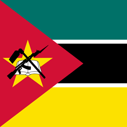
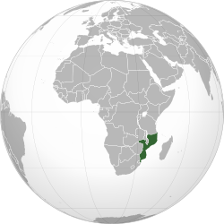

🏛️ Cultura
A cultura de Moçambique é marcada pela diversidade de seus povos e tradições. A música, a dança e o artesanato possuem grande importância na identidade cultural do país.


Moçambique é um país localizado no sudeste da África, banhado pelo Oceano Índico. O país possui uma grande diversidade cultural, histórica e natural, com influências africanas, árabes e portuguesas.
A cultura de Moçambique é marcada pela diversidade de seus povos e tradições. A música, a dança e o artesanato possuem grande importância na identidade cultural do país.
A culinária moçambicana possui forte influência africana, portuguesa e indiana. Entre os alimentos mais utilizados estão peixes, frutos do mar, mandioca, milho e coco.
Moçambique possui uma das maiores costas marítimas da África, com mais de 2.000 quilômetros de extensão. O país também é conhecido por suas belas praias, ilhas e rica biodiversidade marinha.